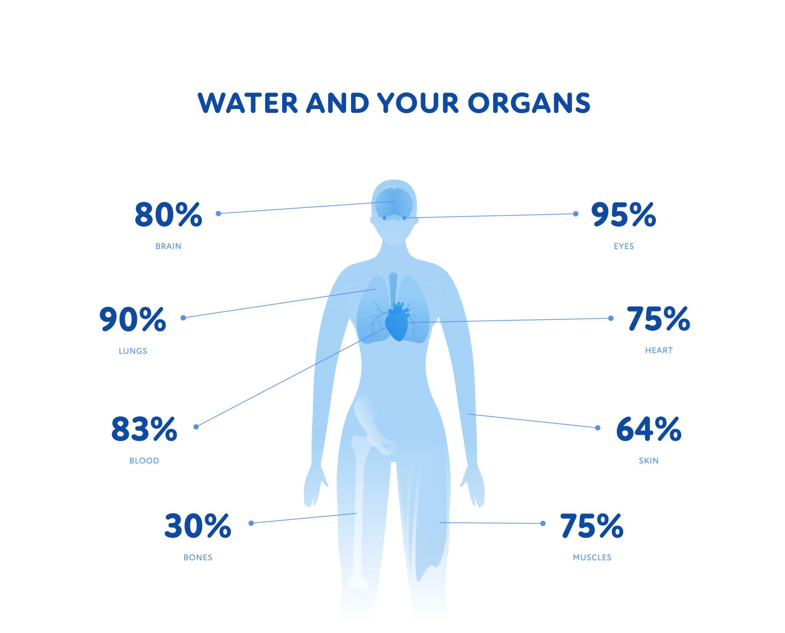
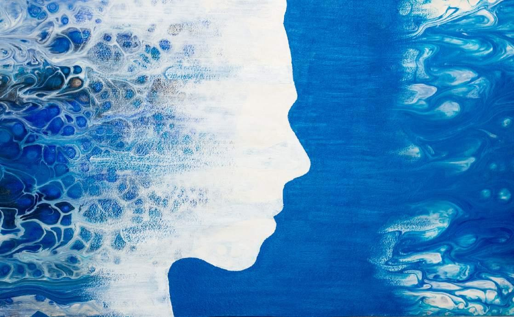
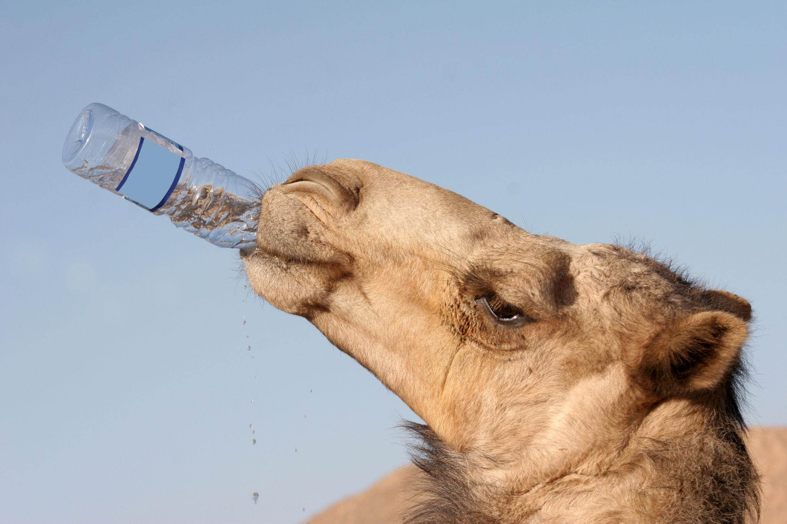
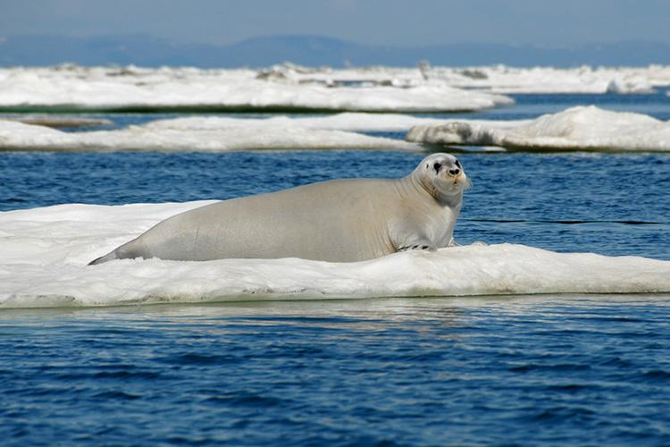

みなさんは、おじいちゃんやおばあちゃんに「水分をしっかり取ってね」と声をかけたことはありますか？
実は、高齢者にとって水と塩分のバランスは、私たち若い世代が思う以上に**命にかかわる重要な問題**なんです。
このブログでは、「なぜ高齢者は脱水しやすいのか？」「塩分がなぜ重要なのか？」「砂漠のラクダやカンガルーネズミから何を学べるのか？」を、高校生にもわかるように楽しく解説します。

こまめな水分補給が大切
1. 人体は“水の生き物”
人間の体の約60％は水でできています。年齢によって割合は変化し、新生児では約75〜80％、成人で60％、高齢者では50〜55％ほどに減少します。

人体各部位の水分割合
水はただ「喉を潤す」だけではありません。血液やリンパ液となって栄養を運び、汗をかいて体温を調節し、関節を保護し、細胞の中での化学反応を支える“万能インフラ”です。
特に注目したいのは、筋肉は約75％が水だということ。つまり、筋肉は“水の貯蔵タンク”の役割も果たしているんです。
2. 高齢者が「脱水」に陥りやすい3つの理由
若い人なら「喉が渇いた」と感じて自然に水を飲みます。しかし高齢者では次のような変化が起きます。
① のどの渇きセンサーが鈍くなる
脳の視床下部にある「口渇中枢」の働きが加齢で低下。体が水を欲していても「喉が渇いた」と感じにくくなります。つまり“気づかないうちに脱水”が進んでしまうのです。
② 筋肉が減って「水タンク」が小さくなる
サルコペニア（加齢による筋肉減少）で、水を貯められる場所が減ります。同じ2リットルの水分が失われても、若者より高齢者の方がダメージが大きいんです。
③ 腎臓の濃縮力が低下する
腎臓は体内の水分が足りないとき、尿を濃くして水を節約します。しかし高齢になるとこの能力が落ち、結果的に尿と一緒に水を捨てやすくなります。
高齢者の脱水は「ふらつき」「意識の混濁」「せん妄（急にボーッとする）」として現れることも。家族は「年のせい」と見逃さないように注意が必要です。
3. 水だけではダメ。なぜ「塩分」が重要なの？
水分補給というと「ただ水を飲めばいい」と思いがちですが、実は大きな落とし穴があります。
人間の体液（血液や細胞の中の液）は、ナトリウム・カリウム・カルシウムなどの電解質が適切な濃度で溶けています。これはまるで「薄めた海水」のような状態。生命はこの塩バランスの上に成り立っています。
水分不足＝塩分濃度異常
大量の汗をかいた後や、下痢・嘔吐のときには水だけでなくナトリウムも失われます。そんな時に真水だけをたくさん飲むと「水中毒（低ナトリウム血症）」を起こし、むしろ危険な状態になることがあります。
特に高齢者では腎機能が低下しているため、このバランスが崩れやすい。だからこそ「水＋適度な塩分＋糖」の経口補水液が効果的なのです。

水と人体の関係
小腸では「ナトリウムとグルコース（糖）」を一緒に運ぶ輸送体(SGLT1)があり、これによって水の吸収も促進されます。まさにOS-1や経口補水液の設計はこの生理学に基づいています。
4. 砂漠の生き物は「水を失わない天才」
ここでちょっと視点を変えて、地球上のすごい適応を見てみましょう。砂漠の動物たちは「いかに水を得るか」ではなく「いかに水を失わないか」に進化してきました。

ラクダの優れた保水能力
ラクダの秘密
- 楕円形の赤血球：血液が濃くなっても流れやすい形状。大量の水を一度に飲んでも赤血球が破裂しにくい。
- 超濃縮尿・乾燥した糞：腎臓の髄質が異常に長く、強力な浸透圧勾配を作り、水をほとんど捨てない。
- 体温上昇の許容：昼間に体温を2〜3℃上げて汗をかかない。夜間に放熱。これにより節水。
カンガルーネズミはもっとヤバい
この小動物はほとんど水を飲みません。どうやって生きるのか？
➤ 脂肪や炭水化物を分解するときにできる「代謝水」を利用。
➤ 鼻の粘膜で呼気の水蒸気を回収。
➤ 夜行性・地下生活で蒸発を極限まで減らす。
つまり、脂肪は単なるエネルギー貯蔵ではなく「水を作る工場」でもあるのです。
5. 寒冷地の生き物は「熱」と「水」をどう守る？
寒い場所では水が凍ってしまうという別の難しさがあります。アザラシやホッキョクグマは厚い皮下脂肪で断熱するだけでなく、脂肪を燃やして代謝水も作り出します。
また、南極の魚には「不凍タンパク質」があり、血液が凍るのを防ぎます。これらの生き物に共通するのは「内部環境を一定に保つ」という生命の原理＝ホメオスタシスです。

寒冷地に適応した海獣
そして人間は、砂漠や極地のような極端な適応を肉体では持たず、その代わりに「火・衣服・住居・医療・介護」などの外部システムで環境を乗り越えてきました。高齢者のケアもこの延長線上にあるといえます。
6. 実践！ 高齢者のための水分・塩分戦略
では、具体的にどのように水分補給をすればいいのでしょうか。ここでは科学的に効果的な方法をまとめます。
▶ 小分け＆時間で飲む
高齢者は一度に大量の水を飲むと胃腸や心臓に負担がかかるため、100〜150mlを1〜2時間おきに。起床時、食後、入浴前後、就寝前など「時間で決めて飲む」習慣が重要です。
▶ 水だけにしない
味噌汁、スープ、麦茶＋少量の塩、経口補水液などを活用しましょう。特に発熱・下痢・食欲低下時はOS-1のような経口補水液が効果的です。
| 場面 | おすすめ | 理由 |
|---|---|---|
| 日常のちょっとした喉の渇き | 水・麦茶・薄めたスポーツドリンク | 糖分が多すぎないもの |
| 軽い運動後・入浴後 | ポカリスエットなど（イオン飲料） | 適度な糖＋電解質で飲みやすい |
| 発熱・下痢・脱水が疑われる | OS-1（経口補水液） | ナトリウム多く糖少なめ、吸収最速 |
| 心不全・腎不全のある人 | 医師の指示に従う | 塩分や水分に制限あり |
おかゆ、豆腐、ヨーグルト、ゼリー、果物、スープなどは立派な水分源。食事のたびに水分をとる習慣が理想的。
7. 筋肉を守ることが水分を守ること
ここまでの話で、筋肉は「水を貯めるタンク」だと繰り返し伝えました。裏を返せば、筋肉が減ると脱水しやすくなり、脱水が進むとさらに筋合成ができなくなる悪循環が生まれます。

筋肉は体内の水タンク
高齢者で特に大切なのは「少量のタンパク質を毎食とること」「軽い筋刺激（スクワット・立ち上がり動作・散歩）を続けること」「十分な睡眠とエネルギー不足を避けること」。そして何よりまず水分状態を整えること。
「水が先、タンパク質はその後」という順番が重要です。脱水状態ではアミノ酸の輸送も細胞内の合成反応もうまく回りません。
8. 老化は「乾燥化」のプロセス
まとめとして、老化現象の本質を考えてみましょう。人間は加齢に伴い、体水分率が75％（乳児）→60％（成人）→50％（高齢者）と低下します。これは単なる数字ではなく、細胞の「みずみずしい秩序」が失われていく過程です。
砂漠のラクダやカンガルーネズミは「失わない設計」を持っていました。人間はそのような極端な適応を捨てる代わりに、文化・医療・介護という外部のシステムに頼る道を選びました。
だからこそ、高齢者を支える私たち若い世代が「水と塩分のバランス」の知識を持つことは、とても大切な意味を持ちます。「ちょっとしたボーっとした様子」も「転びやすくなった」も、もしかしたら隠れ脱水のサインかもしれません。

生命と水の深い関係
9. 私たち高校生にできること
最後に、このブログの内容をアクションに変えましょう。
- ✅ おじいちゃん・おばあちゃんに「ちゃんと飲めてる？」と声をかける習慣を持つ。
- ✅ 「喉が渇いた」と言わせない。時間で水分を促す。
- ✅ 味噌汁やスープ、スポーツドリンクをうまく活用してもらう。
- ✅ 熱中症予防だけでなく、冬の暖房による乾燥脱水も注意。
- ✅ 「水を飲めばいい」ではなく「塩分も忘れずに」と伝える。
あなたの一声が、大切な家族の健康を守るかもしれません。
今回の内容は、比較生理学・老年医学の知見を高校生向けにやさしく再構成したものです。もっと深く学びたい人は「経口補水液」「サルコペニア」「アクアポリン」「ホメオスタシス」などのキーワードで調べてみてください。